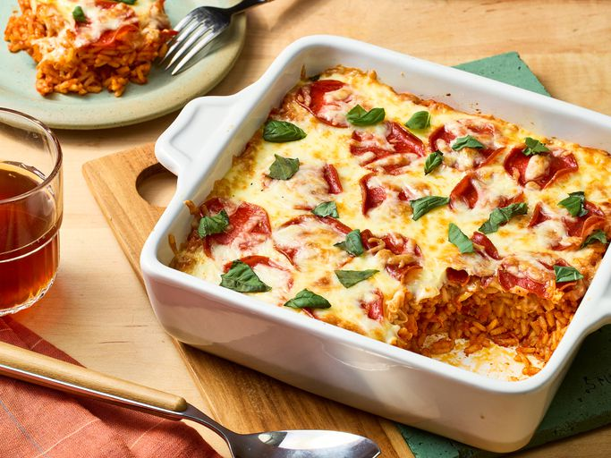

Pizza Rice Bake

Description
When pizza flavors meet the comfort of a hearty casserole, the result is pure culinary bliss—introducing our Pizza-Inspired Rice Bake. This recipe blends the iconic taste of pizza with the warmth and heartiness of a baked rice dish.
Using par-boiled long-grain rice ensures a fluffy texture with perfectly separated grains, ideal for soaking up the rich marinara broth without becoming mushy. A sprinkle of Parmesan adds a creamy depth, while the bubbly mozzarella and crispy pepperoni on top bring all the classic pizza vibes to life.
The final dish? A flavorful, saucy bake that’s satisfying, indulgent, and, as some taste-testers claim, “even better than pizza!”
Ingredients
- Cooking spray
- 2 tablespoons unsalted butter
- 1 1/2 teaspoons minced garlic
- 1/4 teaspoon crushed red pepper
- 1 1/2 cups uncooked parboiled long-grain white rice
- 2 1/4 cups vegetable or chicken stock
- 1/2 teaspoon kosher salt
- 1/4 teaspoon freshly ground black pepper
- 2 cups marinara sauce, divided
- 1/4 cup freshly grated Parmesan cheese
- 15 pepperoni slices
- 1 cup shredded low-moisture part-skim mozzarella cheese
- Torn fresh basil leaves
Steps
- Gather all Ingredients. Spray an 8-inch broiler-safe baking dish with cooking spray, and set aside.
- Melt butter in a large saucepan over medium heat. Add garlic and crushed red pepper and cook, stirring often, until garlic is lightly browned and aromatic, about 1 minute. Add rice, and cook, stirring occasionally until lightly toasted, about 3 minutes.
- Stir in stock, salt, pepper, and 1 1/2 cups marinara sauce. Bring to a boil over medium heat, reduce heat to medium-low, and simmer, covered, stirring every few minutes, until rice is almost fully cooked through, 18 to 20 minutes
- Preheat the oven to 350 degrees F (175 degrees C)
- Remove from heat, stir in Parmesan cheese and remaining 1/2 cup marinara, until evenly combined.
- Transfer rice mixture to the prepared baking dish, spreading it into an even layer.
- Top evenly with pepperoni and mozzarella.
- Bake in the preheated oven until cheese is melted, about 10 minutes. With baking dish still in the oven, increase oven temperature to broil; broil until cheese is just golden brown, 2 to 5 more minutes.
- Remove from the oven and garnish with basil.